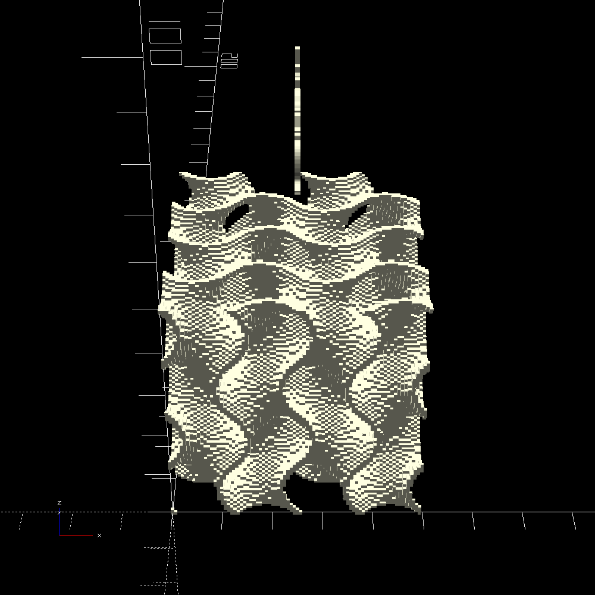

this warning lets the reader know something important about the page. If this sentence is still here on a page different than the testpage.html then I forgot to change it while making a new page.
link to this page
FTT hydrogen peroxide synthesis
 The process that the finespun tech tree uses to synthesize hydrogen peroxide relies on electrolyzing water while flipping polarity of the electrodes repeatedly, forcing oxygen bubbles that collected on the anode to recombine with the surrounding water once it is flipped to become the cathode.
The process that the finespun tech tree uses to synthesize hydrogen peroxide relies on electrolyzing water while flipping polarity of the electrodes repeatedly, forcing oxygen bubbles that collected on the anode to recombine with the surrounding water once it is flipped to become the cathode.
Math document is available here
HTP synthesis machine

The machine for HTP synthesis consists mainly of 2 chambers for storing liquid, a power supply, pump, and a control box.
The chambers are made of metal for strength but lined with high density polyethylene, which is resistant to hydrogen peroxide, and they are placed right against one another with a peltier cell stuck between them.
The chambers are connected by a tube that carries water vapor, and by another tube that goes through a pump for moving the peroxide-enriched water.
The electrolysis chamber has a 3d printed monel electrode at the bottom, which takes the form of an anti-gyroid, producing two tightly interwoven surfaces that don't have an electrical connection between each other.
Directly underneath the anti-gyroid electrodes is a series of outlets connected to a pump which collects the entriched water and moves it to the distillation tank.
The distilaltion tank has no special features, other than having a peltier cell right behind one of its walls, with the other side of the peltier cell being similarly placed right against the electrolysis tank.
When the distillation process starts, both of the chambers are vacuumed out by an external vacuum source, and then the peltier cell is activated, heating up the distillation tank and at the same time cooling the electrolysis tank - this causes water in the distillation tank to boil off, travel to the electrolysis tank through the tube connecting them, and condense on the cold wall, immediately refilling the electrolysis tank for another batch.
Under terrestrial conditions a vacuum pump would be needed to vacuum out the tanks for distillation, but on space habitats it is easily replaced by just a tube connected to space outside the habitat.
Process steps
1. electrolysis:
The process starts with 900kg of water in the electrolysis tank.
Voltage is applied to the electrodes, which are highly porous both to increase surface area and to allow water to flow all the way through them.
The voltage is flipped repeatedly, which produces small concentrations of hydrogen peroxide - the highest concentration accumulates within the porous electrodes, which is exploited by slowly pumping the water away right out of the centers of the electrodes.
By the time that all of the water is pumped out, 90kg of water had undergone the intended reaction, meaning that after this step the electrolysis tank is empty and the distillation tank contains 895kg of 10% concentrated hydrogen peroxide solution - the 5kg was lost as hydrogen which escaped during electrolysis.
2. distillation:
Both the electrolysis and distillation tank are vacuumed out to a low pressure, then the distillation tank is mildly heated while the distillation tank remains cold.
Water evaporates from the distillation tank and condenses back inside the electrolysis tank, meanwhile the hydrogen peroxide stays in the distillation tank due to much higher boiling point.
By the end of the process, the distillation tank contains nearly no water and 85kg of hydrogen peroxide.
3. collection and refill:
The distillation tank is emptied into an appropriate container, preferably made of high density polyethylene which has good resistance to HTP, and the electrolysis tank which at this point contains 810kg of water is filled up with the missing 90kg of water to bring it back up to 900kg.
Process inputs and outputs
One run of the HTP synthesis machine requires the following:
- 900kg of water
- 1966.734 megajoules of electrical energy
- 277.2 kiloseconds of time
And produces:
- 810kg of water
- 85kg of anhydrous hydrogen peroxide
- 5kg of hydrogen